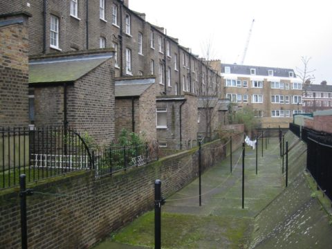
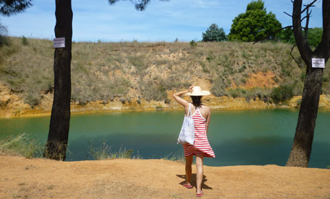
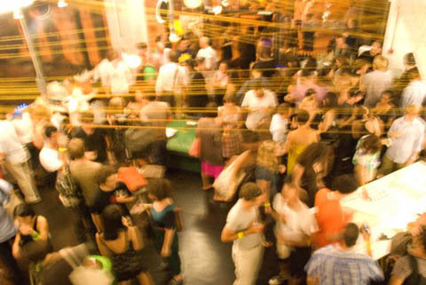
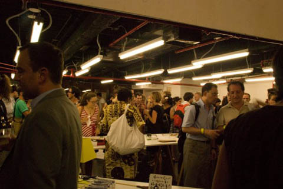
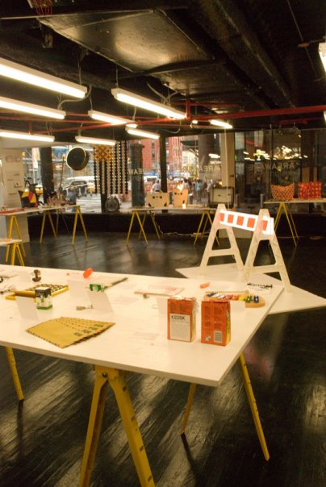

September 14, 2009 by mimecine

Calling all London people, London calling, we are currently making our way across the Atlantic for this years London Design Festival with a KIOSK exhibition at the furniture manufacturer and retailer SCP.
The exhibition is designed by Michael Marriott and is up from September 19th until September 27th, after which SCP will stock a number of the KIOSK items. No more needing to fly over for that veggie peeler my London friends!
The SCP address is 135 Curtain Road. If you are in London for Design Week please come by to say HI to us. It will be strange to have a get-together without you. The party is September 22 from 6:30 – 9:00.
In: london
- Comments closed
September 9, 2009 by mimecine
- Comments closed
September 7, 2009 by mimecine
“have nothing in your houses that you do not find to be useful or believe to be beautiful”
– (from The Beauty of Life, 1880)

This man knew what he was talking about
In: europe, nostalgia, video
- Comments closed
August 31, 2009 by mimecine

Just beat it or eat it!
My father sent this to me today. I can’t decide, is this dog simply a furniture hater or is he a connoisseur of good design…one can argue that sofa is not the epitome of good taste, perhaps he only wanted a Moroso Principessa by Doshi Levien so he trashed the crap out of the JC Penny! I hate to think of the chemicals that little mutt has eaten in his day and what a tough look he has on his face, it kind of says, screw you, get off my matching armchair and feed me damn it! This is my sofa! As a friend said, PETS!
In: design
- Comments closed
August 29, 2009 by mimecine
Well, we are going to do something in London very soon (more on that later), but this is *not* us and it’s newish (the domain was registered in march!) – KiosKiosK, notice the spelling, it’s kind of like preypal.com
The same people also registered kioskkiosk.co.uk – not that we wanted it, but it’s more than a bit creepy.
Dear, come up with your own name! Like, maybe, The Little Strangely Designed Designer PopUp Kiosk, iKiosk, Kioskify, Kiosk.fm, Kiosk.ilicio.us or just SH*TBAGGIE. But I’d charge a hefty consultancy fee for those names. The last one you’d get free.
This pic inappropriatetly appropriated from nypost.com who probably took it from tv anyway
In: copycat, london, uk
- Comments closed
August 28, 2009 by mimecine

An image from the Bergman home on Fårö
Contrary to it being passé or not I have always loved Ingmar Bergman. I read his autobiography, Marco and I met on the island of Fårö where he had his home, when I first moved to Sweden I talked the Swedish Institute into loaning me copies of their English subtitled Bergman films they sent to their consulates abroad, as I felt watching Bergman was the only way to understand the inner workings of the Swedes (some Swedes would hate me for saying this but oh well). How many times can one watch “
Wild Strawberries or
Smiles of a Summer Night ? Forever I say. The man died in 2007 and now there is soon to be a public auction of many of his possessions. According to his will it was his wish, according to me the Swedish Government should be stepping in, but they are sadly conservative now and too busy privatizing the social systems, you know in Sweden, “businessmen” admire the American Way.
HERE you can see details about the auction. Some of the objects are just incredible. If you want to visit Stockholm catching the auction might be a good idea.
In: stockholm, Sweden
- Comments closed
August 27, 2009 by mimecine
We have been visiting family in Provence this summer and thought you’d like to see what we brought back. Provence is nice, mostly tempoless. Food is great. Life is good etc. Bug us to make a map of places to go to, although I’ll *never* give up our secret swimming spot – it’s a bit dangerous and if too many of us came there to swim the local Gendarmes would march in and scream nasty things to the bathers before going to the cafe for the afternoon pastis. Yea, they’re really bad guys.

In: europe, France, provence
- Comments closed
by mimecine
This is soo late since I had to not touch my computer for a while, but here goes anyway:
These guys (who we share 95 spring st with) scored a temporary space in Port Authority and set up a nice collection of things, some of ours included. So, now you can get some presents for someone or yourself to bring along on the bus, or, if you are not going too far, get a bike and skip the bus — Hmm… Not sure the coppers or you will be happy by you biking in the tunnel to NJ though….
In midtown not knowing what to do until the 26th of September? Go to Port Authority’s AREAWARE To Go!



In: areaware, friends, nyc
- Comments closed
by mimecine
A perfect plaything in the playground in Stockholm. Helmets not allowed… Located in Södermalm, the southern part of the city, in a semi-forgotten place. Wouldn’t it be great if all playgrounds were art to climb on not fake tree houses in primary colors. Make a house but make it fantastic !
- Comments closed
August 23, 2009 by mimecine
I have been admiring the blog Miekewillems for a while now. It chronicles the experience of 2 good friends who have opened a store together in Antwerp. I was excited to see the other day that they had visited the store and enjoyed a Surprise ball (and documented it all with beautiful photos!)
 Hope we will be able to visit their store someday!
Hope we will be able to visit their store someday!

In: europe, KIOSK, shop, surprise
- Comments closed


{kind=link}